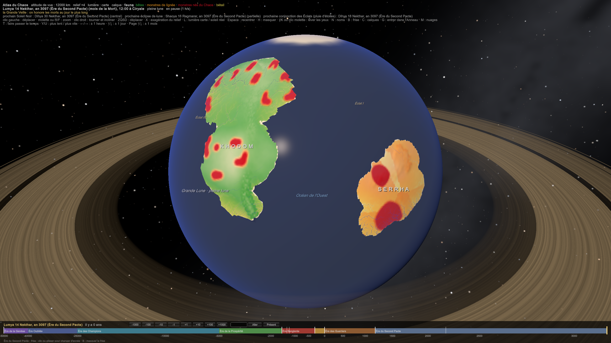

BIO-003 — La faune du monde
Question. Combien d'animaux un milieu peut-il nourrir, qui occupe ces places (bêtes ou monstres), et où vit la faune de tes textes ?
S'appuie sur BIO-001 Bêtes, monstres et Lumas (C-36 : les bêtes ne vivent naturellement que sur Khodom ; ailleurs, leur lignée devient monstre), BIO-002 La végétation du monde et SIM-05 Transport du Chaos. Le calcul est dans l'Atlas (Faune.cs), sur une grille de 0,5°.
1. Ce qu'un milieu peut nourrir
- Les grands herbivores suivent la production des plantes, et même un peu plus vite qu'elle : dans les réserves d'Afrique de l'Est et du Sud, leur biomasse croît plus vite que la pluie (Coe, Cumming et Phillipson, 1976). Ordres de grandeur : quelques centaines de kg/km² au désert, ≈ 5 000 à 15 000 kg/km² dans les meilleures savanes. Sous une forêt fermée, l'essentiel de la production est du bois et des feuilles hautes : il y a moins de grands herbivores au sol.
- Les prédateurs suivent leurs proies : 10 000 kg de proies nourrissent ≈ 90 kg d'une espèce de grand carnivore, quelle que soit sa taille (Carbone et Gittleman, 2002). Un lion de 150 kg demande donc ≈ 17 tonnes de proies vivantes autour de lui.
Dans l'Atlas : biomasse des grands herbivores ≈ 12 × productivité × √(productivité / 1 000) (productivité des plantes en g/m²/an, modèle de Miami, BIO-002), réduite sous la forêt fermée, puis par la chasse et les champs là où vivent les hommes. Le premier grand prédateur vaut ≈ 0,9 % de ses proies.
2. Qui occupe ces places
| Où | Les grands animaux sauvages sont… | Pourquoi |
|---|---|---|
| Khodom, loin du Chaos agité | des bêtes (≈ 92 %) | la protection de Kélia (C-36) |
| Khodom, près d'un territoire | des monstres de lignée | le Chaos agité fait muter les lignées en quelques générations |
| Sera, Maakar, Tawurt, les autres terres | des monstres de lignée (100 %) | les bêtes y deviennent monstres (C-36) : lions ailés, éléphants cuirassés… |
| Les territoires monstrueux | en plus, des monstres nés du Chaos | ils tirent une partie de leur énergie du Chaos agité : ils dépassent ce que les plantes peuvent nourrir |
- La règle des territoires. Un monstre né du Chaos n'obéit pas à la seule loi des plantes : il « mange » aussi du Chaos agité. C'est pour ça qu'un territoire peut porter plus de grands animaux qu'une savane de même climat, et des animaux plus gros. Dans l'Atlas : ≈ 800 à 5 000 kg/km² de monstres nés, selon l'agitation du Chaos.
- Le bétail. Il suit les champs et les gens, et plafonne vers ≈ 10 t/km² dans une société sans engrais ni fourrage industriel. Hors de Khodom, c'est du bétail en sursis (BIO-001) : étables cerclées de fer, fourrage purifié, prières. Ou des monstres de lignée domestiqués.
3. Ce que ça donne
- Khodom est le seul continent de bêtes : ses savanes et ses steppes portent les plus grands troupeaux du monde (≈ 5 000 à 9 000 kg/km² de grands herbivores), et donc les plus grands prédateurs « naturels ».
- Sera n'a que des monstres de lignée et des territoires très peuplés en monstres nés ; ses royaumes denses (Naora, Siriale) ont chassé presque toute la grande faune sauvage et vivent de leur bétail.
- Les territoires sont les « réserves » les plus riches en grands animaux du monde, et les plus dangereuses : une économie de chasse et de purification en vit (BIO-001 Bêtes, monstres et Lumas §5).

4. La faune de tes textes, placée sur la carte
L'Atlas relit la faune de tes textes (atlas/Data/faune.json) et la place selon la région et le milieu, comme la flore. La sonde affiche, pour le lieu sous la souris : la biomasse des grands herbivores (bêtes ou monstres), celle d'un grand prédateur, les monstres nés et le bétail, puis les animaux de tes textes qui y vivent (en orange : les monstres).
5. Les oiseaux et les « lions » de Sera (C-42, décision de l'auteur)
- Les oiseaux restent des bêtes. Mécanisme proposé : les grands vols migrateurs nichent sur Khodom, sous la protection de Kélia, et ne passent que la saison sèche ailleurs. Les oiseaux qui nichent hors de Khodom ne restent pas purs par eux-mêmes : chaque année, les vols qui arrivent de Khodom se mêlent à eux et renouvellent leurs lignées avant que la mutation ne s'accumule (en génétique, c'est un flux de gènes plus rapide que la dérive). Une conséquence : une île isolée, que les vols n'atteignent pas, aurait des oiseaux devenus monstres.
- Les « lions » de Sera ne sont pas des lions. Ce sont des monstres d'allure : une lignée hybride, issue de plusieurs bêtes mêlées puis mutées, qui a fini par converger vers la forme d'un lion, parce que c'est une bonne forme de grand chasseur de savane.
Des lignées sans parenté proche finissent par se ressembler quand elles occupent la même place. Le thylacine, un marsupial d'Australie, ressemblait tant à un loup qu'on l'appelait « loup de Tasmanie » ; les dauphins (mammifères) ont la forme des requins (poissons) ; les cactus d'Amérique et certaines euphorbes d'Afrique se confondent.
Les monstres nés du Chaos ne suivent pas cette règle (C-62). Un oiseau de lignée reste une bête, mais le Chaos peut faire naître des monstres en forme d'oiseau : les Tricorax, corbeaux à trois têtes, sont de ceux-là. Dans le catalogue des monstres, la catégorie « Bêtes & Chimères » devient « Monstres d'allure & Chimères ».
Un savant le voit tout de suite (des dents, des os, une chair à N = +5 au lieu de +3), un paysan non. Même règle, par logique, pour les panthères, les jaguars à cornes et les serpents sauvages de Sera. Dans l'Atlas, la sonde les marque « monstre d'allure ».
Questions ouvertes
- Combien d'énergie un monstre né tire-t-il du Chaos ? À chiffrer avec SIM-12 (écologie) et SIM-08 (métabolisme du Chaos).
- La faune marine : les poissons et monstres marins, et la productivité des océans (plus forte au large des côtes froides et aux hautes latitudes).
- Coe, Cumming & Phillipson (1976), Biomass and production of large African herbivores in relation to rainfall and primary production, Oecologia 22 : 341–354.
- Carbone & Gittleman (2002), A common rule for the scaling of carnivore density, Science 295 : 2273–2276.
Historique
- 2026-11-03 : C-42 (oiseaux bêtes, « lions » de Sera monstres d'allure).
- 2026-11-03 : création ; carte de la faune (bêtes, monstres de lignée, monstres nés, bétail), lois de Coe et de Carbone, faune des textes sur la carte.